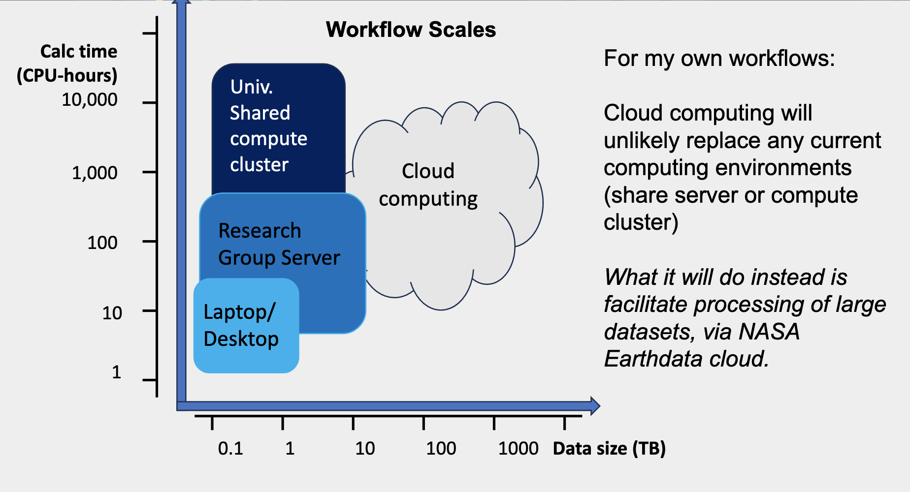

First Forays into the Cloud - first “fledging” story from NASA Openscapes!
Aronne Merrelli is a first example of a scientist “fledging” from the learning JupyterHub managed by 2i2c and Openscapes to another cloud space to do real science - here with Coiled. Aronne says cloud is “like a super power” because he can ask bigger questions, and he shared his story with the 2024 NASA Openscapes Champions science teams. Aronne’s story is available via slides and YouTube and Julie Lowndes is summarizing here as a blog.
Quick links
- slides: First Forays into the Cloud - Aronne’s story presented April 3 for the 2024 NASA Openscapes Champions science teams
- YouTube recording (19 min) of Aronne’s story
- Blog post with talking points for 3-year recap & vision for next two years by Erin Robinson & Julie Lowndes - A February 2024 meeting with NASA managers where we shared Aronne’s story
“In the 2023 Champions Cohort we got a teaser of how to work in the Cloud. With Coiled I did some simple things and now I’ve moved into my own workflow to Cloud. I have an Amazon account now paying my own way.” - Aronne Merrelli
Cloud Takeaways from Aronne Merrelli
Aronne Merrelli, University of Michigan, is a research scientist and a 2023 NASA Openscapes Champion, and he shared his story with 2024 Champions teams. His main takeaways:
Finds cloud to be “a super power”
New science questions: can process data too big to imagine processing in current places
Details: “I did an analysis for my AGU poster: 150 TB of L1 and L2 data, and I only needed some tiny fraction that were of interest to me. In the old way I would need to find a way to download it all first, and I don’t have a machine big enough. But parallelizing with Coiled, I can subset. Now once I realize that, I realize there are bigger datasets that just seemed unworkable before.” - Aronne Merrelli
Cloud costs: cheaper than expected
Matt Rocklin’s “Rule of Thumb”: $0.10 per TB, so processing 150 TB would be roughly $15
Thinking for grant proposals: ~$100s/yr will go a long way
Infrastructure: less intensive than expected
- Shifting workflow to earthaccess then parallelizing with Coiled. Little setup required
Aronne describes himself as a Level 1 or Level 2 algorithm scientist. He had been interested in learning how to use the cloud and had some previous unhelpful experiences, since most discussions revolved around the administration of cloud services that made it seem like there was a large overhead to using the cloud, including specialized packages that seemed hard to use, or inefficient on datasets he uses.
What makes this a fledging story
NASA Openscapes gave a chance for Aaron to learn how to run code in the cloud without much extra overhead. Learning in the 2i2c JupyterHub and then with Coiled, he could focus on the science and not require a cloud optimized data format. The key thing is that he didn’t really need to modify his workflow! He sees cloud computing as a new capability that allows him to do analyses on big data sets that would have been hard to do on any other machine. Here are the steps of what fledging looked like:
Learned when and how to cloud (via NASA Openscapes Champions cohort)
- Cross-DAAC Mentors led, scientist focused, open science (Aronne’s previous attempts to learn were geared towards engineers)
Experimented in JupyterHub (managed by 2i2c & Openscapes, NASA credits)
Extremely easy to get your ‘toes in the water’ running code in the cloud
Ran tutorials, prototyped code, easy with earthaccess & corn environment
Experimented in Coiled (managed by Coiled & Openscapes, NASA credits)
Very easy to use, essentially zero administrative overhead
Learned to parallelize code in small pieces, easy transition to my workflow
Did real science in Coiled (managed by Coiled & University credit card!!!)
- UM’s institutional AWS account is a big help here

Aronne’s recommendations to proceed
For Champions curious what this could look like for them, Aronne suggests they identify a near term task that you can shift to cloud processing. Aronne chose to do the analysis for his AGU poster through Coiled, which fit his 3 criteria:
something you were going to do anyway
requires use of a dataset in the cloud (NASA Earthdata cloud, NOAA open data)
Is “large-ish”, so you will get some immediate benefit (meaning, that you will potentially save yourself some time by doing it in the cloud)
Fledging - building momentum
Aronne’s fledging story is a huge deal, building on the work of many many people for over a decade. It took 10 years of data migration by NASA engineering teams, 3 years of NASA Openscapes Mentors developing common approaches for teaching, to get this fledging story. This first example is the hardest, and we expect more to come (like a flywheel that is toughest to spin the first time, ten times, hundred times.)
Thanks so much to Aronne for sharing what he learned with the NASA Openscapes Mentors, 2024 Champions science teams and other audiences. Thank you to Coiled for partnering with NASA Openscapes and supporting scientists like Aronne!
Citation
@online{merrelli,_university_of_michigan2024,
author = {Merrelli, University of Michigan, Aronne},
title = {First {Forays} into the {Cloud} - First “Fledging” Story from
{NASA} {Openscapes!}},
date = {2024-07-22},
url = {https://nasa-openscapes.github.io/news/2024-07-22-aronne-merrelli-fledging-parallelized-science-in-the-cloud/},
langid = {en}
}